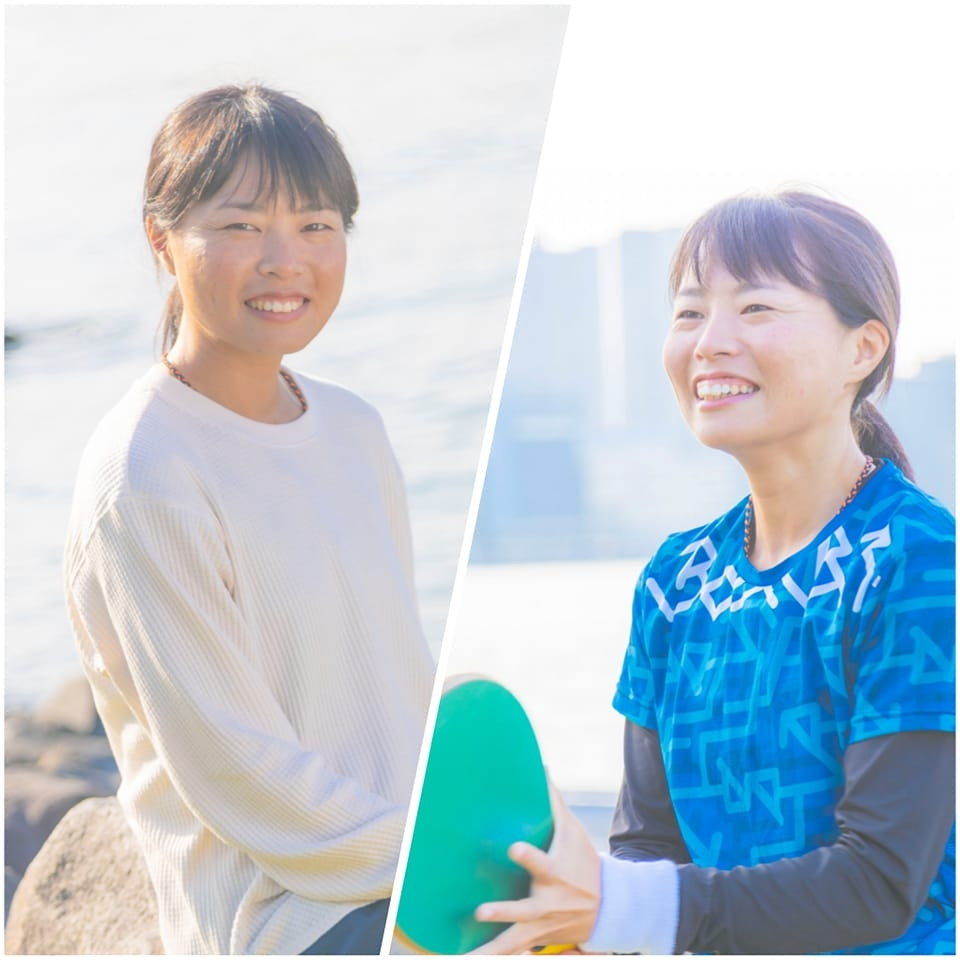

Business Content Creation
落合 真彩 / Maaya Ochiai
広報・採用・マーケティング・ブランディングを目的としたオウンドメディアを中心に、ビジネスコンテンツの取材・執筆・ディレクションまで一貫してお任せいただけます。
10年
フリーランス歴
50社超
取引先（累計）
120件超
年間取材実施数（2025年）
掲載メディア
FastGrow・MarkeZine・日経クロストレンド・現代ビジネス など
About

自己紹介動画
ビジネスライター・コンテンツディレクター / フレスコボール日本代表
筑波大学体育専門学群を卒業後、教育系企業に新卒入社。2016年にフリーランスとして独立し、上阪徹のブックライター塾（4期）を受講後、長い実地経験により、取材・構成・執筆のスキルを磨き続けています。
現在はビジネス系のコンテンツ制作を中心に活動しています。スタートアップ企業から大手企業まで、幅広い規模・業種業界のコンテンツに携わっています。「成長を目指す企業・個人の情報や想いを、届けるべき人に届ける」という思いが、仕事の根底にあります。
ライター業のかたわら、フレスコボールの日本代表選手としても活動しています。本場ブラジルで開催される国際大会に出場し、優勝経験も。ライターとしての仕事と競技の活動が、互いに影響を与え合い、双方に還元されている感覚があります。
Services
社員・経営者へのインタビューから記事完成まで一貫対応。事業内容や会社のフェーズ、求める人材像に合わせたコンテンツを制作します。
経営方針、事業・社員紹介、社内イベント、社内制度紹介など、ニーズに合わせてコンテンツ化。Web・紙冊子、オープン・クローズ社内報問わず対応します。
幅広い業界のサービスの導入事例、イベントレポートなどに対応。情報だけでなく、読んでもらえる面白さも表現します。
ビジネス書について、複数回の取材から構成・執筆まで対応。書評・要約の実績250冊以上。企画段階からのご相談も承ります。
取材・インタビューから記事執筆まで一貫対応。音源・資料・既存素材をもとにした執筆も可能です。
Portfolio
これまでに担当した主な記事・コンテンツをご紹介します。
※口頭でのお伝えや画面での共有が可能な非公開案件も多数あります。詳細はお問い合わせください。
Testimonials
「とても信頼しており、弊社のnote運営にはなくてはならない存在になっていただいております！」
広報担当・PR企業
「事前の入念な下調べやレスポンスの速さなどを含めて大変信頼できると思っています。」
採用広報担当・SaaS企業
「メッセージングについて素人なので、読者に配慮したタイトルをご提案いただける点と、原稿整理の精度が高いところがありがたいと感じております。」
マーケティング担当・IT企業
「執筆いただいたタイアップ記事は、弊社クライアントからも『明瞭でわかりやすくまとめてくださった』とかなり好評でした。おかげで来年度の連載も決まりそうです。」
編集担当・マーケティングメディア
「特に取材時の安定感、追加質問の的確さは素晴らしいなといつも感じています。」
広報担当・人材エージェント
「いつもありがとう！！落合さんの文章がすごい好きです。」
プロマーケター
AI Usage
業務のいたるところにAIを活用しています。（機密情報の入力や、AIモデルへの学習データ提供はしていません）
ただし、AIのアウトプットをそのまま納品することはありません。
読み手に届く文章にするために、記事のゴールやターゲットに合わせた調整を行っています。
現フェーズでのAIにありがちな"それっぽい文章"から、一段深く、届きやすい文章へと変化させます。
また、納品物以外の部分でのAI活用も強化しています。
AI生成テキスト
インタビュー文字起こしを基に「親しみやすいトーンで」と入力
当時と今とでは、マインドが変わってきている部分もあるかもしれません。公務員時代、私は教員だったので、子どもたちや保護者の方々に教育を提供することが仕事でした。給与については、あまり深く考えていなかったんです。純粋にもらうもの、という感覚でしたね。
納品テキスト
親しみやすいトーンは保ちつつ、「教員」の件は記事の文脈上不要なのでカット。その他、言い換え・補足を行い記事の目的に合致するように調整
僕は元公務員です。実際に税金を収入として受け取っていた側ではあるんですが、当時とは全然マインドが違いますね。公務員時代は、自分の収入の原資が何なのか、あまり意識できていませんでした。
Contact
まずはお気軽にご相談ください。ご依頼の内容や予算感について、
オンラインでご相談可能です。
2026年4月現在、4月下旬からの稼働で新規のお仕事をお受けしています。オンラインでのご相談は随時承っております。
「今後、依頼の可能性があるが今すぐではない」「制作のどの部分を頼むかが決まっていない」という段階でもお気軽にご相談ください。コンテンツの方向性の相談から承ります。
可能です。ただし継続的なお取引が難しい場合はお断りすることもあります。まずはご相談ください。
もちろんです。機密性の高い案件にも対応しています。ご相談時にお知らせください。
拠点は東京・神奈川ですが、全国対応可能です（2025年は大阪・名古屋等にも実績があります）。基本的に対面・オンラインともに取材対応いたします。打ち合わせは基本的にオンラインで行っています。
+1 Rally（プラスワンラリー）という屋号について
「+1」は、期待値の101%を出し続けるという仕事への姿勢を表しています。100%の納品は当たり前。その一歩先を常に意識しています。「Rally」は、インタビューは取材対象者との言葉のラリーだから。問いを投げ、相手が返す。その往復の中で、言葉にならなかったものが言葉になる瞬間がある。Rallyはまた、フレスコボール競技者としての自分とライターとしての自分をつなぐ言葉でもあります。